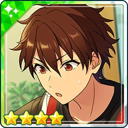
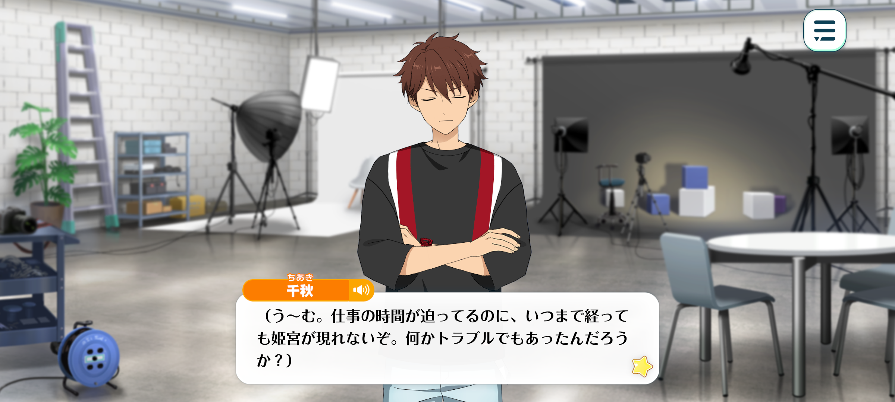
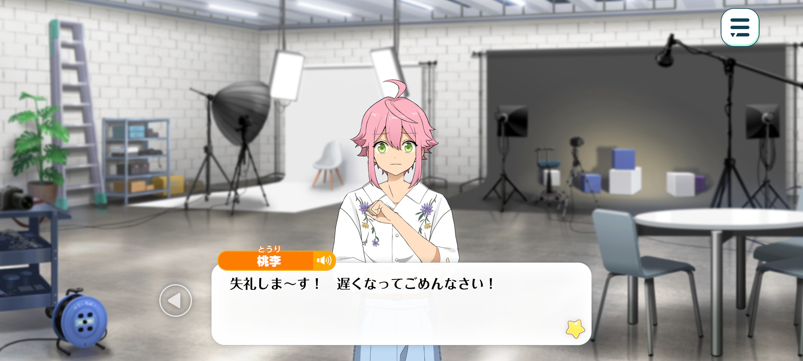
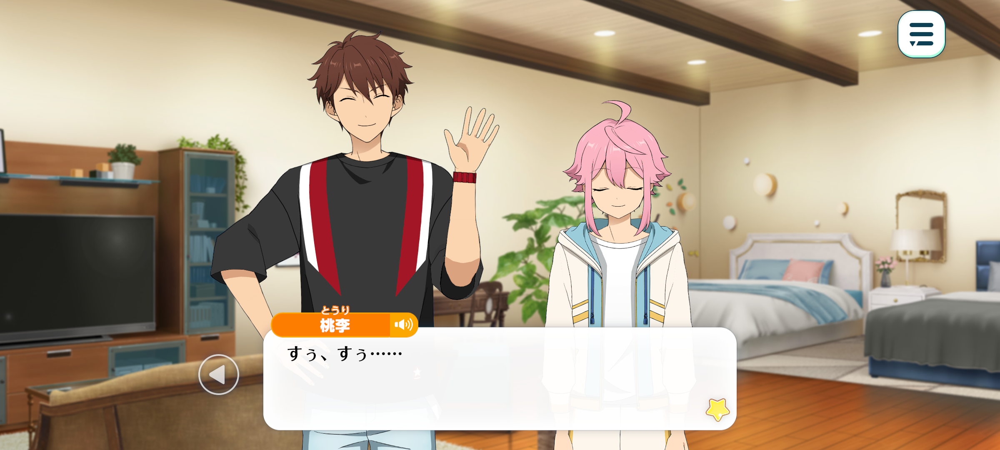
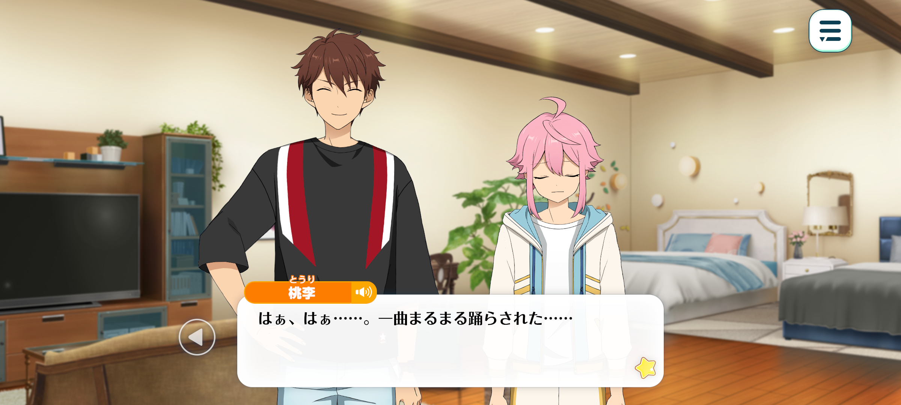
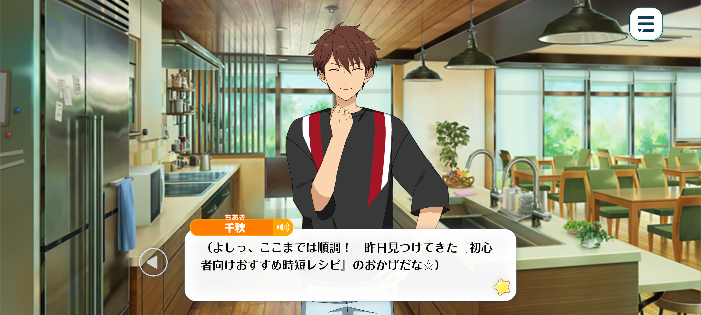
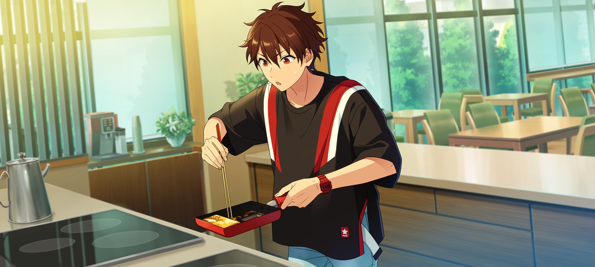

At Your Service, Master!


Season: Summer

Chiaki: (Hmm~. It's time to start work, but Himemiya still isn't here. I wonder if something's happened?)
(...This takes me back to when I was part of Rain-bows. I used to spend a lot of time waiting around like this.)
(But that was because we weren't communicating properly... Maybe I should check with the staff, just to be safe.)

Tori: Excuse me~! Sorry I'm late!
Chiaki: Oh, there you are! I've been waiting for you! You're usually so punctual, Himemiya. I was starting to worry something had happened.
Tori: Nn~... Well, something has happened. And it's still happening, unfortunately.
To tell you the truth, Yuzuru's been away on a work trip for a while now. Until he gets back, I'm stuck taking care of everything myself.
I've only just moved into the dorms, and Yuzuru usually takes care of practically everything for me. I don't even know where to start!
If I went home, the servants would take care of everything. But if I keep running home every time Yuzuru's away, I'll never learn to do anything for myself.
I just don't know what to do! Whenever I try to iron the wrinkles out of my clothes, I somehow end up making even more! How does that even happen?!
Uuugh... There's still three whole days until he gets back. What am I supposed to do until then...?
Chiaki: Hmm, I see what you're dealing with.
In that case, I'll take care of you while Fushimi's away...☆
Tori: You? Do you actually have any experience working as a servant?
Chiaki: Fuhaha! Not one bit!
But as a defender of justice, I can’t ignore a person in need!
Tori: Huh? Hmmm. You're certainly saying that with a lot of confidence. I suppose I should have high expectations, then~.
Chiaki: Don't worry! You can leave everything to me! Don't hold back! ☆
Tori: Where does all that confidence come from...? Hnng, what am I supposed to dooo? I'm not sure I can rely on you, but I can't manage everything on my own...
...Fine, then. You can start tomorrow, ‘kay?
Time: The next morning

Chiaki: Are you awake, Himemiya? I'm coming in! ☆
What a beautiful morning! Today's gonna be a great day!
Tori: Snnrk, snnrk…
Mimimi, mimimi…I can't possibly eat another bite, Eichi-sama~...♪
Chiaki: Oh? Even though he promised he'd be up by now, he's still fast asleep.
This might be a little harsh, but... I suppose there's no other choice. Here I gooo—!
GGOOOOD MORNINGGGG!! ☆
Tori: Hyaaaaah!?
Chiaki: Umu! That did the trick! Good morning, Himemiya ☆
Tori: Uuugh... I was having such a nice dream. Lemme sleep a little longer~...
Chiaki: No hiding under the covers! Come on out, Himemiya! Getting up and moving around will help you wake up!
It's time for Tenka Muteki ☆ Meteorangers! Come on, keep up with me!
Time: Four minutes and thirty seconds later

Chiaki: ...～♪
You managed to keep up just by copying me! As expected of you, Himemiya!
Tori: Haa... haa... You made me dance through the entire song...
Chiaki: But you're wide awake now, aren't you? I'm feeling great, too! ☆
Tori: How are you this energetic so early in the morning...?
Well, I definitely don't feel like going back to sleep anymore.
I guess I should be grateful, then. Thanks for waking me up, Morisawa-senpai.
Um... Could you leave now so I can get changed and wash my face? It's kind of hard to do that with you watching...
Chiaki: Of course! I'll go get breakfast started, then!

(White rice, miso soup, some grilled fish…♪)
(Alright! So far, so good! It's all thanks to those super-easy recipes for beginners I managed to find! ☆)
(Just one last thing... The tamagoyaki! Now I just need to pour the beaten eggs into the pan...)

(Once they've started to set, I need to roll them up... Gotta be careful not to mess up the shape.)
(I think the trick is not to leave them cooking for too long. I've gotta be quick!)
Tori: ...Oh, you're making Japanese food. Is this the sort of thing you usually eat, Morisawa-senpai?
Chiaki: Oh, hiya, Himemiya! It's not about what I like. I made it with you in mind!
I'm sure Fushimi usually makes you nice, balanced meals, doesn't he?
Tori: Uu, well, that's true. I want to eat proper food even whilst Yuzuru's away.
Chiaki: Fuffuffu. But that's not all! Go on, take a look inside the microwave.
Tori: Microwave?
…Oh, fried potato ♪
Chiaki: I'm not quite sure what food group potatoes belong to, but these beauties came from Takamine's grocery store!
They're vegetables, so they're good for you! Make sure you eat plenty!
Tori: Uwaa~! ♪ If Yuzuru heard you say that, he'd definitely give you a disapproving look. But I don't mind~.
Chiaki: I'm glad you like them! Makes all that preparation worthwhile...♪
Speaking of preparation, are you all ready for school?
Tori: Yup! Thanks to you waking me up, I had plenty of time to get ready.
Chiaki: I see, I see! Oh, and don't forget this, too!
Tori: Nn? You made me a bento? But I was going to eat in the cafeteria today.
I wonder what else you've put in here... Waaah!
I knew it! You made everything into cute little shapes, didn't you?
Chiaki: When I was thinking about what to put in your bento, I suddenly remembered something from when I was a kid.
My parents used to make bentos like this for me. They always made me so happy, so I thought I'd do the same for you!
I'm nowhere near as good at it as they were, and the kinshitamago got a little burnt... But the fact that it's all wonky gives it its own charm, don't you think? ☆
Tori: …
...I'm not a little kid anymore, you know.
But... thank you for making this for me, Morisawa-senpai.
Chiaki: Fuhaha! You're welcome! Make sure you eat plenty! You need to grow up big and strong!
Now, dig in! Every great day starts with a good breakfast...☆